UX Case Study
Bumble
Japanese Localization /
UX Improvement
Problem
Japanese UI often sounds machine-translated or unnaturally localized. This can lead to lower user trust and fewer subscriptions. By adopting more natural translations and a Japanese-friendly UI, Bumble has an opportunity to strengthen its presence in the Japanese market and improve user conversion and retention.
Is Japan that important?
- Japan is the world's second-largest dating app market, valued at US$2.3B in 2025, behind only the United States (Financial Times).
- In 2020, 28.3% of Japanese men and 17.8% of Japanese women remained unmarried at age 50. These figures have steadily increased since the 1990s (Statista).
- Meanwhile, the number of single-person households in Japan exceeded 21.15M, accounting for nearly 38% of all households (Statista).
Together, these demographic trends highlight the continued growth potential of Japan's online dating market.
Example 1
Changes
- A clearer line break in the header.
- Split the caption into two sentences to eliminate redundancy and make the copy sound more natural.
User Impact
- A deliberate line break and natural-sounding copy make it easier to read and prevent the UI from feeling translated or "foreign."
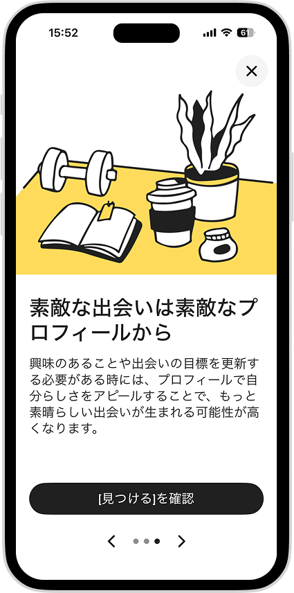
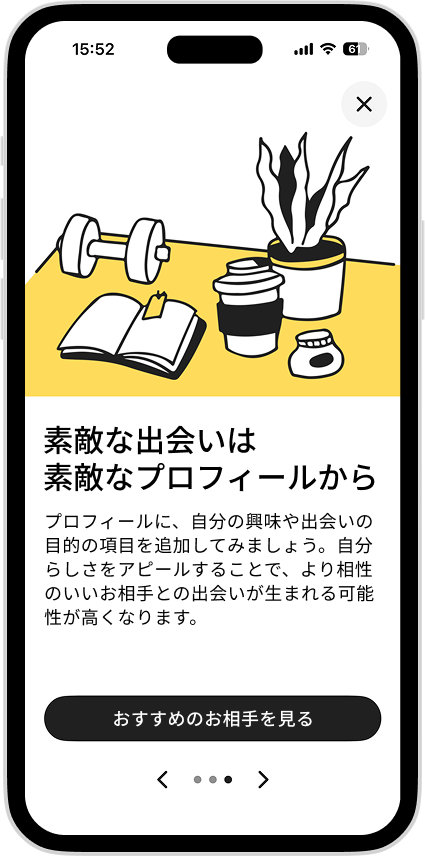
Example 2
Changes
- Standardized the use of the full-width exclamation mark（！） instead of the half-width (!) to match Japanese writing conventions.
- Replaced awkward translations with more natural phrasing.
User Impact
- Unnatural translation can make the service feel less trustworthy. Natural, polished copy encourages users to commit to subscriptions.
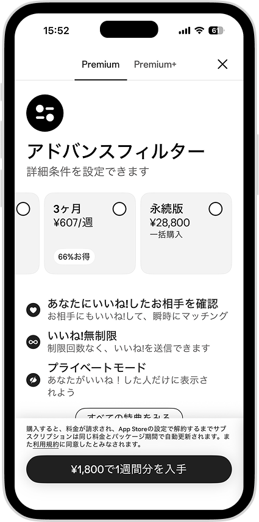
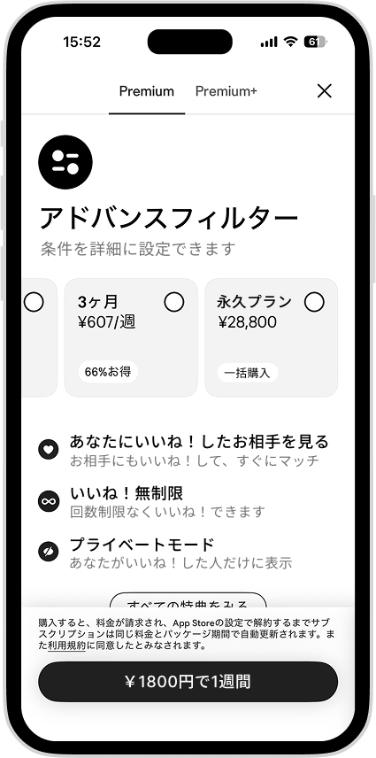
Example 3
Changes
- Replaced half-width symbols ([], /) with formatting that better aligns with Japanese typography.
- Tightened the wording to improve readability.
User Impact
- Reducing visual and cognitive load makes the ad easier to scan, creating a smoother user experience and potentially improving conversion rates.
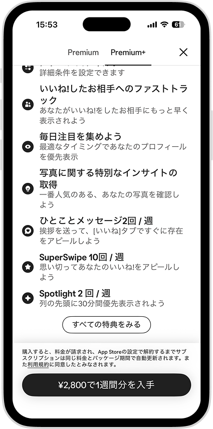
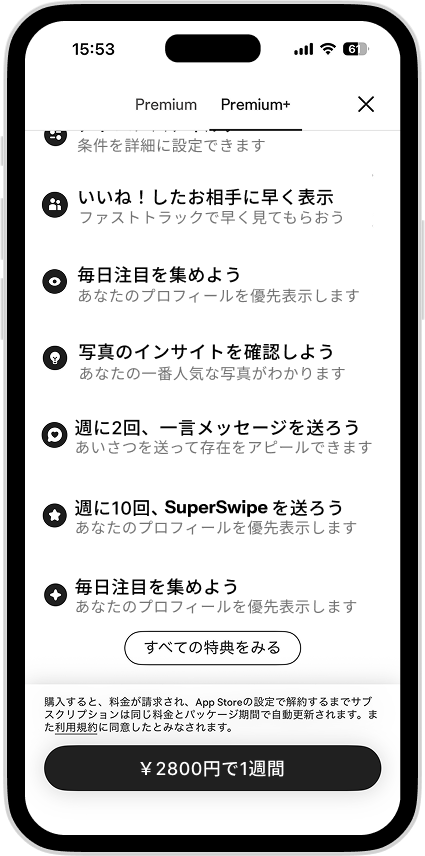
Example 4
Changes
- Added a soft CTA using invitational language (common in Japanese advertising) to the hero copy.
- Tightened the wording to improve readability.
User Impact
- An invitational CTA feels more polite and approachable than the original version, making it better suited to Japanese communication styles.
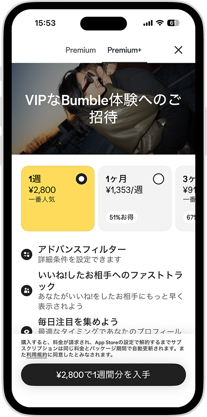
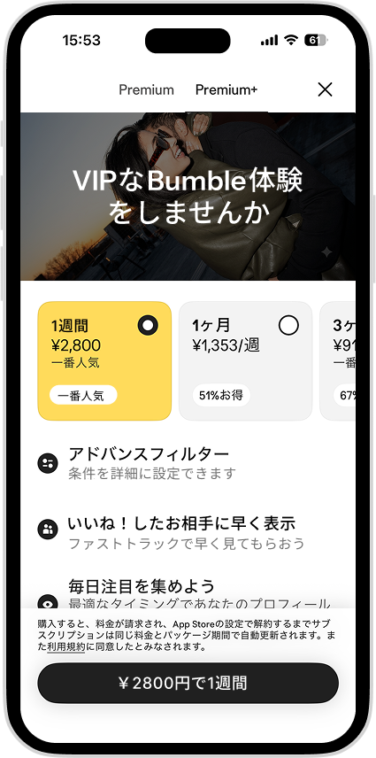
Example 5
Changes
- Fixed translation errors (e.g., "confidence" had been translated as "credibility," which changes the intended meaning).
User Impact
- Translation accuracy affects how users present themselves to potential matches. Since profiles are central to the Bumble experience, preserving the original meaning is essential.
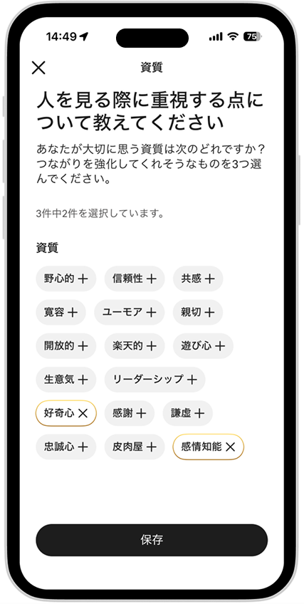
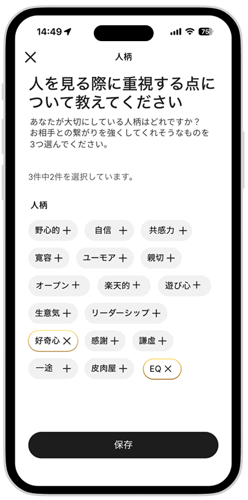
Example 6
Changes
- Replaced uncommon phrases or unnatural expressions with more familiar ones (e.g., ポジティブなシグナル → グリーンフラッグ, 関係 → 交際, 願わくば → だといいな).
User Impact
- When prompts feel familiar and natural, users are more likely to engage with them and add them to their profiles, leading to a more enjoyable user experience.
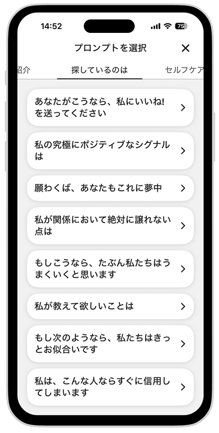
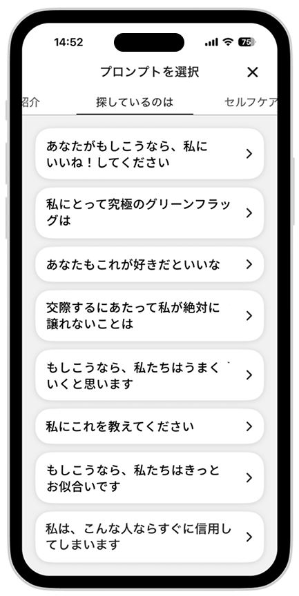
Reflection
This project reinforced that localization is about far more than swapping words for their dictionary equivalents. The same sentence can be grammatically correct and still feel foreign, cold, or untrustworthy if it ignores the conventions, tone, and cultural expectations of its audience. Working through each of these examples made it clear how much small, easy-to-overlook details — a line break, a full-width punctuation mark, a more familiar word choice — add up to whether a product feels like it was built for its users or simply translated for them.